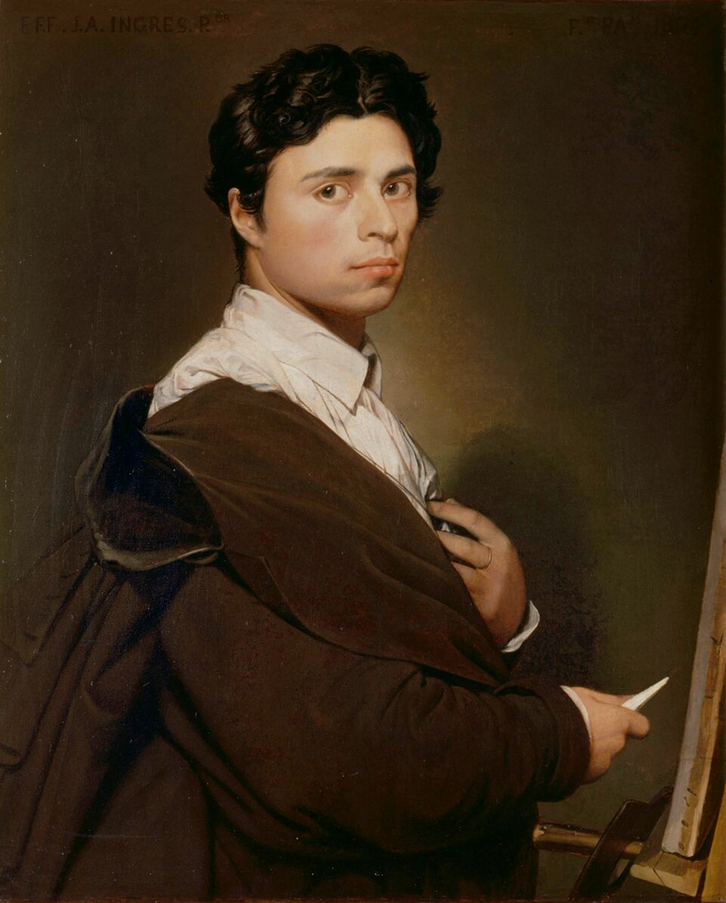

Pintor francés
Jean-Auguste-Dominique Ingres
1780–1867
Alumno de David y guardián del clasicismo frente al romanticismo de Delacroix, defendía que el dibujo es la probidad del arte. Deformaba sin embargo la anatomía sin escrúpulo cuando la línea lo pedía —cuellos y espaldas imposibles—, algo que sus críticos le echaron en cara y que sus herederos del siglo XX celebraron. Tocaba el violín lo bastante bien como para dejar una expresión al idioma francés.